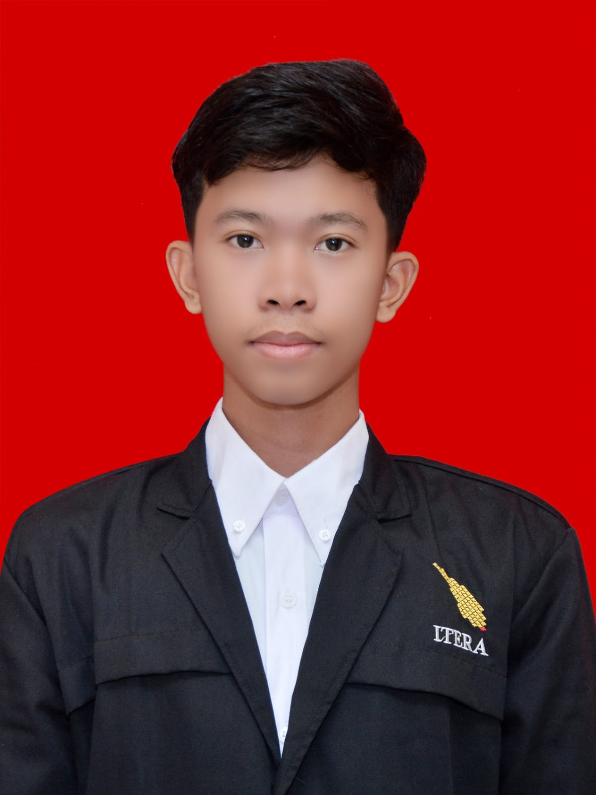

PORTOFOLIO

Biodata Diri
- Nama : Andika Rahman Pratama
- NIM : 123140090
- Prodi : Teknik Informatika
- Tahun Angkatan : 2023
- Tempat Tanggal Lahir : Jambi, 11 Agustus 2005
- Alamat Asal : Batang hari, Jambi
- Alamat Domisili : Jl. Airan Raya, Lampung Selatan
Tentang Saya
Saya Andika Rahman Pratama, akrab dipanggil Dika atau Andika. Saya berasal
dari Jambi, tepatnya di Kabupaten Batang Hari, Kecamatan Muara Bulian.
Sekarang saya tinggal di Lampung karena harus melanjutkan pendidikan. Saya
berkuliah di Institut Teknologi Sumatera, Prodi Teknik Informatika,
angkatan 2023. Saya memiliki minat dalam bidang pengembangan perangkat lunak dan keamanan siber.
Pengalaman
-
Staff di divisi operasional pada acara First Gathering Angso Duo Jambi
ITERA 2024
- Anggota Komunitas Youth Ranger Indonesia, wilayah Lampung
Pendidikan
| No. |
Tingkat Pendidikan |
Nama Pendidikan |
Tahun Masuk - Tahun Lulus |
| 1. |
SD |
SD Negeri 80/I Muara Bulian |
2011 - 2017 |
| 2. |
SMP |
SMP Negeri 21 Batang Hari |
2017 - 2020 |
| 3. |
SMA |
SMA Negeri 1 Batang Hari |
2020 - 2023 |
| 4. |
S1 |
Institut Teknologi Sumatera |
2023 |
Kontak